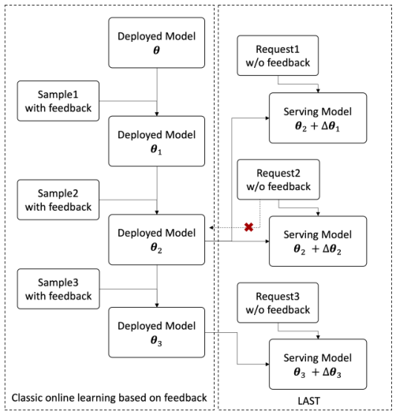
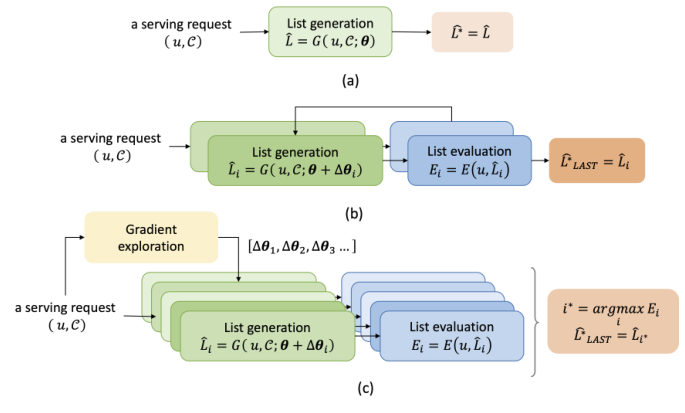

Do Not Wait: Learning Re-Ranking Model Without User Feedback At Serving Time in E-Commerce (无需等待：电商场景下在服务时刻学习重排模型)
- 会议/期刊: RecSys 2024
- 作者与机构: Yuan Wang, Zhiyu Li, Quan Lin (阿里巴巴) ; Changshuo Zhang, Sirui Chen, Xiao Zhang, Jun Xu (中国人民大学高瓴人工智能学院/信息学院)
- 推荐链路定位: 重排（Re-ranking，列表级生成）
- 研究方向: 多任务学习与列表级重排 / 强化学习与动态探索推荐
- 论文原文: https://arxiv.org/abs/2406.14004v1
- 开源代码: https://github.com/LibRerank-Community/LibRerank
TL;DR (1分钟核心速览)
重排模型的在线学习长期受制于"反馈延迟"——购买信号可能滞后数小时乃至数天，且所有请求共享同一个静态模型实例。本文提出 LAST：在收到请求 \((u,\mathcal{C})\)的那一刻，借助 Actor-Evaluator 框架中的代理评估器\(E(\cdot)\)现场求解一个请求级、用完即弃的参数增量\(\Delta\boldsymbol{\theta}\)，从而在无真实反馈的前提下完成模型自适应。在 LibRerank 基准（Ad2 数据集）的全库排序协议下，LAST 将 NDCG@10 从 0.7370 提升至 0.7418（+0.65%），线上淘宝"订阅"场景 A/B 测试中人均购买数 +2.08%、点击数 +0.08%。
Background & Motivation (背景与核心矛盾)
- 主流范式: 工业重排普遍采用 Actor-Evaluator 框架（CMR/EGR），先离线训练代理评估器拟合列表级奖励，再让生成器（Actor）最大化评估分数，以避免"列表排列爆炸"带来的标注难题；部署后靠在线学习用最新样本持续更新模型。
- 前人局限: 其一，在线学习必须等真实反馈回流，购买标签滞后使得模型在流量高峰期一直"陈旧"；其二，任意时刻系统对所有请求都使用同一份固定参数，无法适配秒级内数万个请求各自的上下文差异。
- 核心洞察 (Key Insight): 评估器 \(E(\cdot)\) 本身就在训练中学会了"预测用户反馈"，它是一个不依赖真实标签的即时监督源；既然评估器可随时调用，模型改进就不必等用户，可以直接在服务时刻完成。
- 本文切入点: 把"在线学习"从持久化的参数积累，改造为对每个请求施加一次瞬态参数扰动——算完就丢，既捕捉请求上下文，又阻断评估器误差在时间轴上的传播。

Method (核心方法设计)
1. 整体框架 (Overall Architecture)
收到请求后，已部署的 Actor \(G(\cdot;\boldsymbol{\theta})\)先生成初始列表\(\hat{L}\)；独立的梯度探索模块依据列表生成概率\(P(L)\)对参数\(\boldsymbol{\theta}\)的梯度构造候选修正方向\(\Delta\boldsymbol{\theta}\)，并配一组步长\(\{\eta_1,\eta_2,\dots\}\)并行生成多份、"试探性"参数副本\(\boldsymbol{\theta}+\eta\Delta\boldsymbol{\theta}\)；每份副本各产出一个候选列表，由评估器\(E(u,\hat{L}_\eta)\)打分，取得分最高者返回给用户。请求结束后\(\Delta\boldsymbol{\theta}\)被丢弃，线上模型回滚到原始\(\boldsymbol{\theta}\)。该设计与反馈驱动的经典在线学习完全正交，可叠加共存。
flowchart TD
A["请求 (u, C)"] --> B["已部署 Actor G(θ) 生成初始列表"]
B --> C["梯度探索模块: g_θ = ∂P(L̂)/∂θ, 归一化为 Δθ"]
C --> D["并行试探: θ + η·Δθ (η₁, η₂, ...)"]
D --> E["Evaluator E(u, L̂_η) 打分"]
E --> F["取 η* = argmax E, 输出对应列表"]
F --> G["丢弃 Δθ, 模型回滚至 θ"]
2. 关键设计拆解 (Key Designs)
-
请求级瞬态修正算子 (Transient Request-Specific Modification)：为破除"反馈滞后 + 全局单模型"双瓶颈，把学习目标从"更新部署参数"改为"在请求点邻域内搜索参数"： \(\Delta\boldsymbol{\theta}^{*}(u,\mathcal{C}) = \arg\max_{\Delta\boldsymbol{\theta}} E\big(u, G(u,\mathcal{C};\boldsymbol{\theta}+\Delta\boldsymbol{\theta})\big),\quad \hat{L}^{*}_{LAST}=G(u,\mathcal{C};\boldsymbol{\theta}+\Delta\boldsymbol{\theta}^{*})\)。 直觉上这是一次"以评估器为目标的单样本微调"，而用完即弃保证了即便评估器在此请求上有偏，误差也不会被写回模型。
-
双向列表概率梯度的并行探索 (Parallel Gradient Exploration)：直接对 \(E\)求\(\partial E/\partial\boldsymbol{\theta}\)往往不存在（\(E\)未必是\(\boldsymbol{\theta}\) 的函数），且回传整套亿级参数不现实。作者改而只沿两个特殊方向探索——提高当前列表生成概率的正向与反向： \(\boldsymbol{g}_{\boldsymbol{\theta}}=\frac{\partial P(\hat{L})}{\partial\boldsymbol{\theta}},\quad \Delta\boldsymbol{\theta}=\alpha\frac{|\boldsymbol{\theta}|}{|\boldsymbol{g}_{\boldsymbol{\theta}}|}\boldsymbol{g}_{\boldsymbol{\theta}},\quad \eta^{*}=\arg\max_{\eta}E(u,\hat{L}_{\eta})\)。 \(E\)只用于校准幅度而非决定方向（与离线训练"奖励高则提概率"同构）。按\(|\boldsymbol{\theta}|/|\boldsymbol{g}_{\boldsymbol{\theta}}|\) 归一化使不同层共享同一相对步长，避免深层网络梯度尺度失衡；同时只修改关键子集参数以控制延迟。
-
训练目标、监督信号与推理开销：离线阶段评估器以 \(\min_{\phi}\mathbb{E}[\,diff(E(u,L;\phi),R(u,L,y_L))\,]\)拟合列表奖励，Actor 以\(\max_{\boldsymbol{\theta}}\mathbb{E}_{u,\mathcal{C}}[E(u,G(u,\mathcal{C};\boldsymbol{\theta}))]\)训练，全程不依赖真实列表标签。服务时无需负采样，仅需\(1+|\{\eta\}|\) 次前向（并行版），代价是固定倍数的推理放大；级联版反复"预测—评估—更新"至收敛，精度更高但响应时间显著上升。
Experimental Setup & Evaluation Protocol (实验设置与评估协议)
- 数据集与预处理: 离线实验基于 LibRerank 基准的公开数据集 Ad2（阿里妈妈展示广告）；论文正文将统计细节放入 Auxiliary Materials，未在正文披露过滤阈值，故下表仅标注可得信息：
| 数据集 | #Users | #Items | #Interactions | 稀疏度/密度 | 特征/场景说明 |
|---|---|---|---|---|---|
| Ad2 (LibRerank 默认配置) | 正文未披露 | 正文未披露 | 正文未披露 | 正文未披露 | 电商展示/点击日志，候选池 \(M\)内取长度\(N\) 的列表，日志含点击反馈 |
| Taobao "Subscribe" 线上 | 线上真实流量 | 电商商品池 | 实时请求流 | — | 手机淘宝订阅场景，A/B 实验 |
- 数据划分与防穿越 (Splitting Strategy): 沿用 LibRerank 默认的请求级切分（训练/验证/测试按请求划分，同一请求的候选集与列表不跨集合），评估器与 Actor 分阶段训练以避免信息穿越。
- 排名评测协议 (Ranking Protocol): 组内全候选排序（每个请求在 \(M\)个候选上生成完整长度\(N\) 的列表），指标为 map@5/10 与 ndcg@5/10；第二组实验改用连续型
evaluator@5/@10（前 N 项平均点击概率），以规避离散指标的"悬崖效应"。 - 对比基线与超参设置: 非 AE 基线 GSF、DLCM、SetRank、PRM；AE 基线 EGR、CMR(Greedy)、CMR(Sampling)。AE 类模型在表 1 中以 NDCG 为评估函数、在表 2 中以预训练点击率评估器为评估函数。显著性检验为 \(p<0.05\)；核心超参为归一化因子\(\alpha\)（最优 1%）与步长列表长度。
Key Experimental Results (实验关键数据)
1. 主实验对比 (Main Results)
| 方法 | map@5 | map@10 | ndcg@5 | ndcg@10 | evaluator@5 | evaluator@10 |
|---|---|---|---|---|---|---|
| GSF | 0.6038 | 0.6074 | 0.6838 | 0.6984 | — | — |
| DLCM | 0.6169 | 0.6201 | 0.6948 | 0.7080 | — | — |
| SetRank | 0.6084 | 0.6122 | 0.6878 | 0.7020 | — | — |
| PRM | 0.6176 | 0.6209 | 0.6950 | 0.7087 | — | — |
| EGR | 0.6010 | 0.6047 | 0.6822 | 0.6964 | 0.3215 | 0.3086 |
| CMR(Greedy) | 0.6032 | 0.6067 | 0.6838 | 0.6979 | 0.3259 | 0.3131 |
| CMR(Sampling) | 0.6559 | 0.6587 | 0.7243 | 0.7370 | 0.3395 | 0.3267 |
| LAST | 0.6623 | 0.6652 | 0.7289 | 0.7418 | 0.3438 | 0.3310 |
| Improv. vs 最优基线 | +0.98% | +0.99% | +0.64% | +0.65% | +1.27% | +1.32% |
线上 A/B（基线 CMR(Sampling)）：人均点击数 +0.08%，人均购买数 +2.08%。
2. 消融实验 (Ablation Study)
论文未设"逐组件删除"式消融，其等价证据来自列表试探策略与修正幅度/步长的受控对比：
| 配置 | ndcg@10 | evaluator@10 | 说明 |
|---|---|---|---|
| 单列表策略（CMR Greedy） | 0.6979 | 0.3131 | 仅取每步最大概率项，无试探 |
| 多列表采样（CMR Sampling） | 0.7370 | 0.3267 | 引入多次列表采样 |
| LAST，\(\alpha\) 过小 | 低于峰值 | 低于峰值 | 修正力度不足，列表无法被改变 |
| LAST，\(\alpha\) 过大 | 低于峰值 | 低于峰值 | 局部梯度方向不可靠 |
| LAST，\(\alpha=1\%\) 且步长列表充分 | 0.7418 | 0.3310 | 双向梯度 + 尺度归一化 + 多步长择优 |
3. 关键实验发现 (Key Findings)
- 收益主要来自"多试探"，LAST 的增量来自"试探的定向化"：从 CMR(Greedy) 到 CMR(Sampling)，ndcg@10 由 0.6979 跃至 0.7370（+5.60%）；LAST 在此高基线上再取 +0.65%，说明盲目采样已吃掉大部分红利，而梯度引导把剩余的采样预算用在有效方向上。
- 离散指标会夸大差距，连续评估更贴近线上：NDCG 对"完美列表 1,0,0,0,0（1.0）"与"近似列表 0,1,0,0,0（0.63）"相差近 59%，因此表 1 的巨大差距需打折看待；改用 evaluator@N 后 LAST 的 +1.27%/+1.32% 与线上 +2.08% 购买提升量级一致，可信度更高。
- AE 框架内的"排序先验缺失"是隐藏暗礁：所有单列表 AE 模型（EGR 0.6964、CMR-Greedy 0.6979）反而输给非 AE 的 PRM（0.7087），原因是"按预估点击率降序"是极强先验，RL 搜索未利用它而陷入较差局部解；只有引入多列表试探才反超，提示 AE 类方法必须配套足够采样。
Highlights & Limitations (亮点、对比与审稿批判)
- 与代表作对比 (vs. Prior Work): 与 CMR/EGR 等同属 AE 框架，但 CMR 只在离线训练阶段调用评估器，LAST 把评估器搬到服务时刻当作即时监督源；与传统 online learning（如 FTRL/增量更新）相比，LAST 的更新是请求级瞬态的，不写回模型，因而无误差累积；与纯 RL 搜索相比，LAST 不重训策略，只做局部参数邻域搜索，工程上可作为普通模型模块接入。
- 可迁移亮点: (i) "以评估器打分为目标的瞬态参数扰动 + 多步长择优"可直接套用到任何具备 scorer 的列表生成任务（如多样性重排、广告 pacing）；(ii) 按 \(|\boldsymbol{\theta}|/|\boldsymbol{g}_{\boldsymbol{\theta}}|\) 的相对梯度归一化，是跨层共享步长的廉价替代方案，可迁移到小样本在线适配。
- 审稿级局限批判: 其一，级联版需多次前向，响应时间随迭代线性增长，在万级 QPS 场景下并行版的 \(1+|\{\eta\}|\)倍推理开销仍是硬成本，论文未给出延迟实测；其二，评估器偏差是唯一监督源，理论上仅靠"瞬态性"兜底，缺少对评估器失准（如分布漂移下\(E\) 排序错误）的敏感性实验，且离线仅 Ad2 一个数据集、提升幅度仅 0.6%–1.3%，统计显著但效应量偏小，泛化性有待更多场景验证。
Rating (四维评分)
- 方法创新性 (Novelty): ⭐⭐⭐⭐ （把在线学习从"持久参数积累"翻转为"请求级瞬态扰动"，视角新颖且与既有在线学习天然正交可叠加）
- 评估协议与实验扎实度 (Protocol & Experiments): ⭐⭐⭐ （离线全库排序 + 连续 evaluator 双协议互补，并有真实线上 A/B 与 \(p<0.05\) 检验，但仅单数据集、缺延迟与评估器敏感性分析）
- 写作与数学规范度 (Clarity & Rigor): ⭐⭐⭐⭐ （问题定义与 AE 框架铺垫清晰，算法伪代码完整可复现；梯度方向"不取 \(\partial E/\partial\boldsymbol{\theta}\)"的论证略简，缺复杂度分析）
- 工业落地与复现价值 (Industrial & Practical Value): ⭐⭐⭐⭐⭐ （基于 LibRerank 开源、可作为普通模型模块零改造接入，线上购买 +2.08% 的实证极具工程说服力）